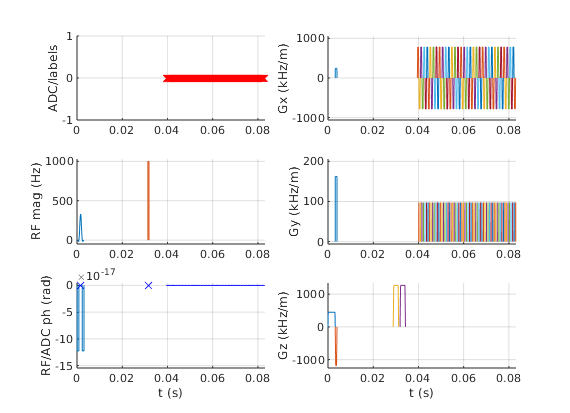
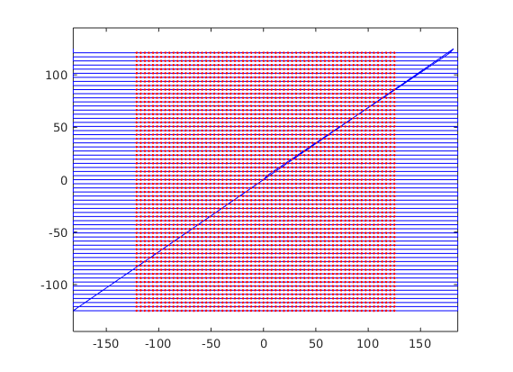

Contents
fov=256e-3; Nx=64; Ny=64;
thickness=3e-3;
lims = mr.opts('MaxGrad', 32, 'GradUnit', 'mT/m',...
'MaxSlew', 130, 'SlewUnit', 'T/m/s', 'rfRingdownTime', 20e-6, ...
'rfDeadTime', 100e-6, 'adcDeadTime', 20e-6);
seq=mr.Sequence(lims);
[rf, gz] = mr.makeSincPulse(pi/2,lims,'Duration',3e-3,...
'SliceThickness',thickness,'apodization',0.5,'timeBwProduct',4);
deltak=1/fov;
kWidth = Nx*deltak;
readoutTime = 3.2e-4;
gx = mr.makeTrapezoid('x',lims,'FlatArea',kWidth,'FlatTime',readoutTime);
adc = mr.makeAdc(Nx,lims,'Duration',gx.flatTime,'Delay',gx.riseTime);
preTime=8e-4;
gzReph = mr.makeTrapezoid('z',lims,'Area',-gz.area/2,'Duration',preTime);
gxPre = mr.makeTrapezoid('x',lims,'Area',gx.area/2-deltak/2,'Duration',preTime);
gyPre = mr.makeTrapezoid('y',lims,'Area',Ny/2*deltak,'Duration',preTime);
dur = ceil(2*sqrt(deltak/lims.maxSlew)/10e-6)*10e-6;
gy = mr.makeTrapezoid('y',lims,'Area',deltak,'Duration',dur);
rf180 = mr.makeBlockPulse(pi,lims,'Duration',500e-6,'use','refocusing');
gzSpoil = mr.makeTrapezoid('z',lims,'Area',gz.area*2,'Duration',3*preTime);
TE=60e-3;
durationToCenter = (Nx/2+0.5)*mr.calcDuration(gx) + Ny/2*mr.calcDuration(gy);
rfCenterInclDelay=rf.delay + mr.calcRfCenter(rf);
rf180centerInclDelay=rf180.delay + mr.calcRfCenter(rf180);
delayTE1=TE/2 - mr.calcDuration(gz) + rfCenterInclDelay - preTime - mr.calcDuration(gzSpoil) - rf180centerInclDelay;
delayTE2=TE/2 - mr.calcDuration(rf180) + rf180centerInclDelay - mr.calcDuration(gzSpoil) - durationToCenter;
seq.addBlock(rf,gz);
seq.addBlock(gxPre,gyPre,gzReph);
seq.addBlock(mr.makeDelay(delayTE1));
seq.addBlock(gzSpoil);
seq.addBlock(rf180);
seq.addBlock(gzSpoil);
seq.addBlock(mr.makeDelay(delayTE2));
for i=1:Ny
seq.addBlock(gx,adc);
seq.addBlock(gy);
gx.amplitude = -gx.amplitude;
end
seq.addBlock(mr.makeDelay(1e-4));
Warning: WARNING: system maximum RF amplitude exceeded (117.4%)
check whether the timing of the sequence is correct
[ok, error_report]=seq.checkTiming;
if (ok)
fprintf('Timing check passed successfully\n');
else
fprintf('Timing check failed! Error listing follows:\n');
fprintf([error_report{:}]);
fprintf('\n');
end
Timing check passed successfully
export and visualization
seq.setDefinition('FOV', [fov fov thickness]);
seq.setDefinition('Name', 'epise');
seq.write('epi_se.seq');
seq.plot();

calculate trajectory
[ktraj_adc, t_adc, ktraj, t_ktraj, t_excitation, t_refocusing] = seq.calculateKspacePP();
plot k-spaces
figure; plot(t_ktraj, ktraj');
hold; plot(t_adc,ktraj_adc(1,:),'.');
figure; plot(ktraj(1,:),ktraj(2,:),'b',...
ktraj_adc(1,:),ktraj_adc(2,:),'r.');
axis('equal');
Current plot held


sanity checks
TE_check=(t_refocusing(1)-t_excitation(1))*2;
fprintf('intended TE=%.03f ms, actual spin echo TE=%.03fms\n', TE*1e3, TE_check*1e3);
intended TE=60.000 ms, actual spin echo TE=60.000ms